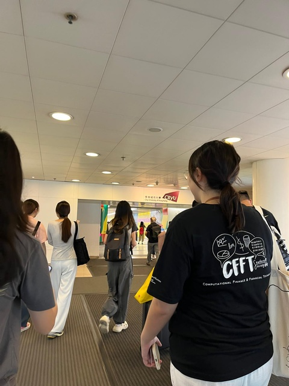

CityU Explained: What Makes It Different
CityU is a young, urban university. It was founded in 1984 and is known for creative media, business, engineering, law and data science.
No campus bubble
The big difference from campuses like CUHK or HKUST is that there is no “campus bubble”. You walk out of class and you're in a shopping mall with groceries, a cinema, an ice rink and a food court. Most of Hong Kong is under 40 minutes away by MTR. Some students miss a green, quiet campus. Most end up loving that the city starts at the campus gate.

A few things exchange students should know
- Check your department's rules early. Some courses give priority to degree students over exchange students.
- Join one society or sports team. It is the easiest way to meet local students, not only other exchange students. See Things to Do in Hong Kong for more on making friends.
- Eat on campus at least once a week. Canteen meals are some of the cheapest in the area. Our Food guide explains how to order without Cantonese.